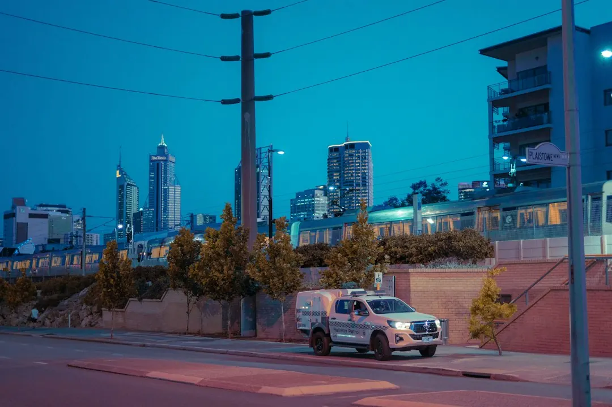

An electrical assessment should check your switchboard, wiring, parking position and the charger's compatibility with your car before installation. The quote should separate the charger from connection work and identify any electrical upgrades. Cable distance, access and available power affect the work involved. After fitting, the electrician should test the installation, set up the charger and explain its controls and documentation.
For homeowners comparing ev charger safety checks perth options, the practical questions are electrical capacity, charger compatibility, cable routing and what the installation quote actually includes.
Ev Charger Safety Checks Perth Explained
EV Charger Installation Perth explains that a home charger adds demand alongside the appliances already running in the property. The first review should therefore consider the switchboard, wiring and the electrical capacity available for charging, rather than treating the charger as an isolated appliance.
WA government guidance recommends having an electrician assess whether existing wiring can support the extra charging demand. A switchboard may support a charger without an upgrade, but that conclusion depends on an electrical assessment at the property. Where available power is limited, load management may reduce the charger's draw while household appliances are operating.
- Confirm the charging limit of the vehicle.
- Check the capacity of the switchboard and wiring.
- Ask whether charging controls or an electrical upgrade are needed.
Match the charger to the car and the parking space
A charger already purchased still needs to suit the vehicle and the circuit supplying it. The relevant checks include the connection accepted by the car, the charging rate the home can support and the amount of charging needed for the owner's daily driving. A faster unit is not automatically the right choice if the property cannot supply its required power.
The parking position determines much of the installation work. The distance from the switchboard to the bay helps establish the cable route, while access along that route can affect whether walls need opening. An assessment at the property can identify a suitable route before the work is priced.
For a home with rooftop generation, compatible controls may use surplus solar generation after household demand is met. Some compatible chargers and software can also schedule charging or track electricity use. Those functions should be checked against the proposed equipment rather than assumed from the charger's name.
Compare the installation setting
The same vehicle can require a different charging arrangement depending on where it is parked and how long it stays there. Home, apartment and workplace settings raise different questions about supply, access and control.
| Setting | Main question | Detail to confirm |
|---|---|---|
| Home | Can the property supply the charger? | Switchboard capacity, cable route and household demand |
| Apartment or shared parking | Can the allocated bay use the required route and power? | Approval for shared property and access across common areas |
| Workplace or fleet | How many vehicles charge and how long do they remain parked? | Available electrical capacity and AC or DC equipment |
Apartment charging may need approval to use shared property, particularly where a cable route crosses a common driveway. The allocated bay, shared power capacity and individual energy use all belong in the review. Workplace and fleet planning should account for vehicle return times and parking duration. AC equipment supplies power that the car converts for its battery, while DC equipment converts power outside the car.
Read the quote as a scope of work
A useful quote separates the charger from the work needed to connect it. Installation cost depends on access, the cable run and any electrical upgrades identified for the home. A short, accessible route may involve different work from a longer route between a distant switchboard and parking space, so the quote should describe the actual property conditions.
Ask the electrician to identify the proposed cable route, the connection method, the charger setup and any upgrade that changes the total cost. The agreed scope should also record testing, control demonstrations, supplied documentation and any workmanship warranty or support arrangements. These details make it easier to compare quotes without treating the equipment price as the full installation price.
Before requesting a review, provide the suburb, where the car is parked, the charger already owned or being considered and any concern about available power. That information gives the electrician a starting description of the job.
Diagnose errors before replacing equipment
Repeated charger errors should be investigated before a replacement is chosen. The cause may involve the equipment, its settings or the electrical supply, and an on-site investigation can separate those possibilities and explain the repair options.
Testing is also part of completing a new installation. The electrician should test the fitted equipment, set up the charger and demonstrate its controls before everyday use. Documentation supplied with the work and the agreed support arrangements should be kept with the property records.
For a second perspective on the installation process, see this guide to EV charger installation in Perth. The useful comparison is whether both guides direct attention to the vehicle, parking position, electrical supply and defined scope.
- Describe the vehicle. Record the car's charging limit, accepted connection and the amount of charging needed for typical driving.
- Map the parking position. Note where the car is parked, the distance to the switchboard and any access issue along the likely cable route.
- Check available power. Ask for an electrician to assess the switchboard and wiring alongside the appliances already operating in the home.
- Define the quote. Request separate descriptions for the charger, connection work, testing, setup, documentation and any electrical upgrade.
- Confirm the handover. Make sure the completed installation is tested and that the charger controls and support arrangements are explained.
| Setting | Main question | Detail to confirm |
|---|---|---|
| Home | Can the property supply the charger? | Switchboard capacity, cable route and household demand |
| Apartment or shared parking | Can the allocated bay use the required route and power? | Approval for shared property and access across common areas |
| Workplace or fleet | How many vehicles charge and how long do they remain parked? | Available electrical capacity and AC or DC equipment |
Common questions
Can a Perth home switchboard support an EV charger? It may support one without an upgrade, but capacity needs an electrical assessment. Charging demand has to be considered alongside appliances already running in the home.
Does a charger I already bought still need checking? Yes. The charger must suit the vehicle, the circuit supplying it and the charging rate the property can support before it is installed.
What affects the installation cost? Access, the cable run and any electrical upgrades affect the work involved. The distance between the switchboard and parking space is one relevant quote input.
What should happen after the charger is fitted? The completed installation should be electrically tested, the charger should be set up and its controls and supplied documentation should be explained.
This guide covers electrical capacity, charger compatibility, parking access, quote scope, shared-property questions and post-installation testing for EV charging in Perth.